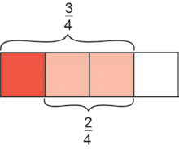

Example 1
Solution
Multiply by to obtain fractions with the same denominator as follows:
Alternatively, using rectangular diagram;

3/4
2/4
equal to
or
Example 2
Solution
The LCM of 5 and 4 is 20, then
Example 3
Solution
The LCM of 6 and 7 is 42, then
Therefore,
FOR ONLINE READING ONLY